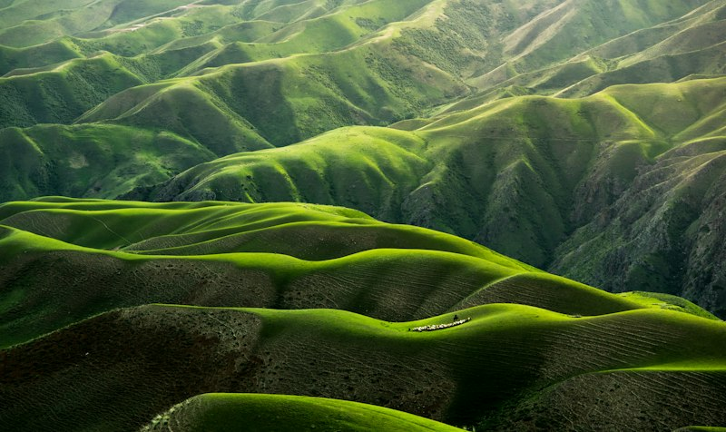
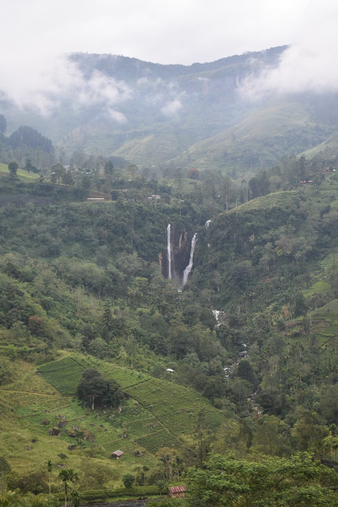

Paket Wisata Danau Toba All-In

3 Hari 2 MalamEksplorasi Kaldera Toba & Samosir 3D2N
Desa Tomok, Batu Persidangan Siallagan, Bukit Holbung, dan Air Terjun Efrata.
Rp 1.450.000

2 Hari 1 MalamAir Terjun Sipiso-piso & Menara Tele 2D1N
Air terjun setinggi 120 meter jatuh ke tepi danau, view tele, dan santap malam ikan mas arsik.
Rp 850.000
 4 Hari 3 Malam
4 Hari 3 Malam
Complete Geopark & Budaya Batak 4D3N
Mendaki Pusuk Buhit, pemandian air panas Pangururan, dan belajar menenun kain ulos.
Rp 2.100.000